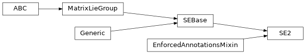

jaxlie._se2
Module Contents
Classes
Special Euclidean group for proper rigid transforms in 2D. |
- class jaxlie._se2.SE2(parameters)[source]
Bases:
jax_dataclasses.EnforcedAnnotationsMixin,jaxlie.SEBase[jaxlie.SO2]Special Euclidean group for proper rigid transforms in 2D.
Internal parameterization is
(cos, sin, x, y). Tangent parameterization is(vx, vy, omega). .. py:attribute:: unit_complex_xy- type:
typing_extensions.Annotated[jax.Array, (Ellipsis, 4), jax.numpy.floating]
Internal parameters.
(cos, sin, x, y).- static from_xy_theta(x, y, theta)[source]
Construct a transformation from standard 2D pose parameters.
Note that this is not the same as integrating over a length-3 twist.
- Parameters:
x (jaxlie.hints.Scalar) –
y (jaxlie.hints.Scalar) –
theta (jaxlie.hints.Scalar) –
- Return type:
- classmethod from_rotation_and_translation(rotation, translation)[source]
Construct a rigid transform from a rotation and a translation.
- Parameters:
rotation (jaxlie.SO2) – Rotation term.
translation (jaxlie.hints.Array) – translation term.
- Returns:
Constructed transformation.
- Return type:
- classmethod from_matrix(matrix)[source]
Get group member from matrix representation.
- Parameters:
matrix (jaxlie.hints.Array) – Matrix representaiton.
- Returns:
Group member.
- Return type:
- as_matrix()[source]
Get transformation as a matrix. Homogeneous for SE groups.
- Return type:
jax.Array
- classmethod exp(tangent)[source]
Computes
expm(wedge(tangent)).- Parameters:
tangent (jaxlie.hints.Array) – Tangent vector to take the exponential of.
- Returns:
Output.
- Return type:
- log()[source]
Computes
vee(logm(transformation matrix)).- Returns:
Output. Shape should be
(tangent_dim,).- Return type:
jax.Array
- adjoint()[source]
Computes the adjoint, which transforms tangent vectors between tangent spaces.
More precisely, for a transform
GroupType:GroupType @ exp(omega) = exp(Adj_T @ omega) @ GroupType
In robotics, typically used for transforming twists, wrenches, and Jacobians across different reference frames.
- Returns:
Output. Shape should be
(tangent_dim, tangent_dim).- Return type:
jax.Array